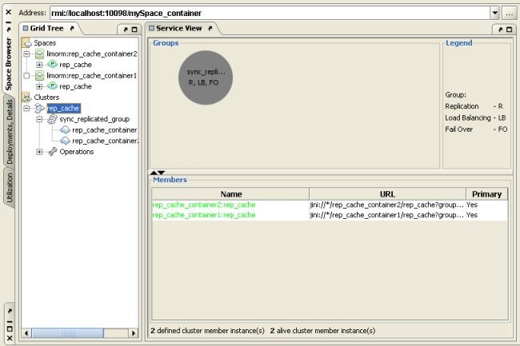
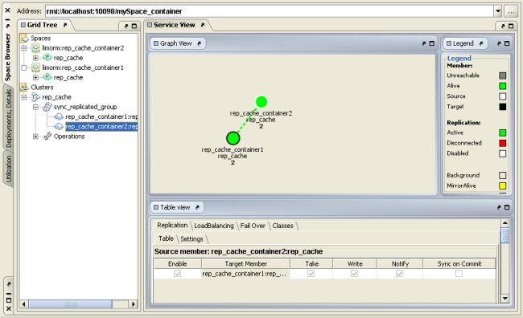
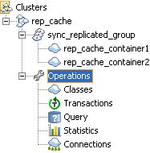

), each representing a space listed in the cluster configuration file.
), each representing a space listed in the cluster configuration file.Cluster View presents a graphic representation of the spaces in a cluster, the groups they comprise (replication, failover and load-balancing groups), and the relationships among them. Cluster View complements the visualization provided by the Container Tree panel, because it uses the cluster configuration file, as well as the GigaSpaces Server, as a reference. As a result, you can visualize spaces whether they are online or offline, without loading their containers. While the Container Tree panel is a good way to see which spaces are currently running, Cluster View gives you a larger picture of the space architecture.
Another important advantage of Cluster View over the Container Tree panel is that it shows groups as an intermediate level between spaces and clusters. This level has always been a part of cluster configuration files, but it is now easier to visualize.
An important distinction between Cluster View and the Container Tree is that the Cluster View is exclusively a monitoring tool. It does not allow you to perform any operations on clusters, groups or spaces, or to modify cluster or space configuration.
The Cluster View is divided into four main areas:
), each representing a space listed in the cluster configuration file.Each cluster node (), which allows you to view all cluster information in one node (for more details, see below).
Visual display – this area changes according to your selection in the tree. When you select the cluster node, the visual display shows the groups in the cluster.

When you select a group node, the display shows the spaces in the node. When you select a space, either by double-clicking it here or by clicking its node in the tree, the display focuses on that space and shows its connections to other spaces (in a replication group).
Legend – shows the meaning of the colors used in the visual display. There is a different legend for full cluster view and for spaces-in-group view.
Information Panel – when you select the cluster node in the tree, basic details about all the cluster's members are displayed here. When you select a space, by clicking its node in the tree or its representation in the visual display, this area divides into a number of tabs that provide a detailed description of the space's configuration settings, and its replication connections (in a replication group). All the information displayed in this panel is read-only.

The view above does not display the number of objects for persistent spaces in LRU mode, since this might result in very high CPU usage. To change this, see the Menus and Buttons section.
The Operations cluster node () allows you to view all classes, data, statistics, transactions, and connections for the entire cluster under a single node.

The views under the Operations node have the same functionality as the views under the regular space/cluster nodes: